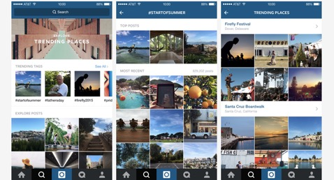
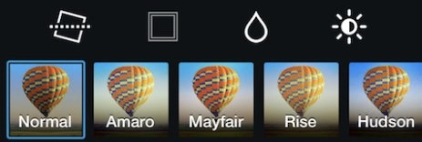
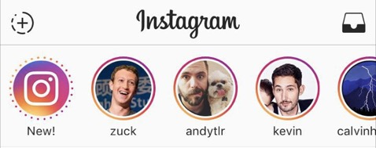
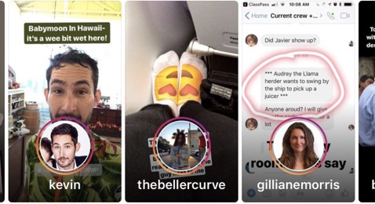

Today I will be doing a review on a popular mobile application amongst the teenagers and youths today - Instagram. Click here to download the app
Instagram is a social networking app made for sharing photos and videos from a smartphone. The main function is nonthless photo sharing. User is able to take pictures within the app or use photos that already exist in your camera roll.
Once you have created an Instagram account, you will have your own profile and a news feed. When you post a photo or video on Instagram, it will be displayed on your profile. You can give your photo a title, which is helpful and fun. Other users who follow you will see your posts in their own feed. Likewise, you'll see posts from other users whom you choose to follow. It emphasise on mobile use and visual sharing. Just like other social networks, you can interact with other users on Instagram by following them, being followed by them, commenting, liking, tagging and private messaging. You can even save the photos you see on Instagram or share it on other social media such as Facebook, Twitter, Tumblr.
Instagram is available for free on iOS and Android devices.It can also be accessed on the web from a computer, but users can only upload and share photos or videos from their devices.
Using Instagram as a Social Network
Instagram is all about visual sharing, so the user's main intention is to share and find only the best photos and videos. Every user profile has a "Followers" and "Following" count, which represents how many people they follow and how many other users are follow them.
Every user profile has a button you can tap to follow them. Your profile can be set either public or private. When your profile is set to public, anyone can find and view your profile, along with all your photos and videos. If your profile is set to private, only followers whom you approve are able to see your posts. Interacting on posts is fun and easy. You can double tap any post to "like" it or add a comment at the bottom. You can even click the arrow button to share it with someone via direct message.
You are also able to find or add more friends or interesting accounts to follow, by using the search tab (marked by the magnifying glass icon) to browse through tailored posts recommended to you.
You can also use the search bar at the top to look for specific users or hashtags
Applying Filters and Editing Your Instagram Posts
Instagram has revolutionalise its posting options. When it first launched in 2010, users could only post photos through the app and add filters without any extra editing features.
Today, you can post both directly through the app or from existing photos/videos on your device. You can also post both photos and videos up to one full minute in length, and you have a whole bunch of extra filter options plus the ability to tweak and edit.
When you tap the middle Instagram posting tab, you can select the camera or video icon to let the app know whether you want to post a photo or a video. Capture it through the app, or tap the photo/video preview box to pull up a previously captured one.
Instagram has up to 23 filters you can choose to apply to both photos and videos. By tapping the Edit option at the bottom of the photo editor, you can also apply editing effects that allow you to edit adjustments, brightness, contrast and structure. For videos, you can trim them and select a cover frame.
If you want to edit your photo or video within the Instagram app, simply tap the wrench icon and choose a feature from the bottom menu. You can adjust the contrast, warmth, saturation, highlights, shadows, vignette, tilt shift and sharpness.
Sharing Your Instagram Posts
After you've applied an optional filter and possibly made some edits, you'll be taken to a tab where you can fill out a caption, tag other users to it, tag it to a geographical location and simultaneously post it to some of your other social networks.
Once it's published, your followers will be able to view it and interact with in their feeds. You can always delete your posts or edit their details after you published them by tapping the three dots at the top. You can also configure your Instagram account to have photos posted on Facebook, Twitter, Tumblr. It works like a one-step-solution to all social media platform.
Viewing and Publishing Instagram Stories
Instagram recently introduced its new Stories feature, which is a secondary feed that appears at the very top of your main feed. You can see it marked by little photo bubbles of the users you follow.
Tap any one of these bubbles to see that user's story or stories that they published over the last 24 hours.
To publish your own story, all you have to do is tap your own photo bubble from the main feed or swipe right on any tab to access the stories camera tab. An example of how a Insta story looks like is depicted in the image below.
Personal experience of using Instagram
I use Instagram on a daily basis. Whether it is to upload photos/videos to share about my personal life with other users (whom are mainly my friends) or to take a glimpse of their life as well. Besides checking on my friend's updates, I utilised this platform to follow celebrities and social influencers, because they are constantly updating their profile with the latest trend and hype in the market. Influencer marketing is quite applicable to youths like me because I feel that they are also normal human being like me, and as humans we create connections with other humans, and through Instagram it allow us to build relationships with people who resonate with us. When they build up their following in social media platform like Instagram, they are also building trust and authenticity with their audiences, which means their followers are more likely to believe and listen to what they have to say than a slick piece of marketing from a brand. I learnt a lot of new things through Instagram and I would say I am healthily addictive towards this mobile application.
Evaluate Instagram as a social media application
I will give a 9/10 for my user experience on Instagram. I like both the UI/UX elements of this mobile application. Whenever Instagram rolls out a new feature, it will be easy to learn and adapt to it. Moreover, it will be more fun and interesting then before. So far, all the features introduced are enriching and relevant to the users.
However, I minus off one point for the algorithm behind the application. I followed close to 300 accounts but I only see the same few accounts appearing in my news feed everyday. I will have to perform a dedicated search on accounts that have not been appearing in my feed to check on their updates and see if I missed out on anything.
Ultimately, Instagram is still a a user-friendly mobile application and I would encourage those who do not have an account yet to download it and start jumping onto the personal-life-photo-sharing bandwagon!